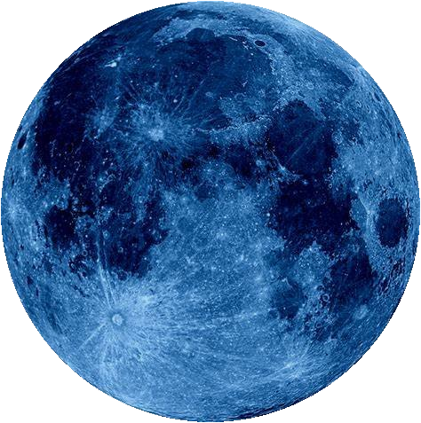

Validation: Sunlight Comparison & Sanity Checks
Independent validation comparing Horizon Atlas computed polar illumination against published NASA/LOLA benchmarks, accompanied by automated data integrity checks.
Sunlight Illumination Benchmark
Site: Malapert MassifScientific Caveats & Differences
- Averaging Duration: Published illumination maps (e.g. Gläser et al. 2014) are averaged over an 18.6-year lunar precession cycle (~163,000 hours), whereas Horizon Atlas models our 13-month operational mission window (9,481 hours).
- Observer Height: Published models evaluate an elevated mast height (e.g. 2 m above surface). Horizon Atlas models a ground-level observer (0 m) where local boulders and micro-relief cast longer shadows.
- DEM & Solar Disk: Published maps use a 20 m/pixel LOLA DEM; Horizon Atlas uses the official 80 m LOLA polar DEM (
LDEM_80S_80MPP_ADJ), evaluating Sun center disk elevation relative to the 360° ray-marched horizon. - Transparency: Differences between ground-level mission windows and multi-year orbital averages are scientifically expected and openly documented.
Automated Browser Sanity Checks
Data Sources & Method
In accordance with NASA Open Science principles, Horizon Atlas uses the NASA/JPL Horizons API and discloses all calculation parameters and limitations.
1. Ephemerides: NASA / JPL Horizons
Apparent hourly azimuth and elevation for the Sun (Body 10) and Earth (Body 399) are fetched via the official JPL Horizons API using lunar surface geodetic coordinates (CENTER='coord@301'). Window: 2026-12-01 to 2027-12-31 (9,481 hourly ephemeris steps per site).
2. Topography & Terrain: NASA LRO LOLA (80 m/px)
Lunar topography is computed directly from the Lunar Reconnaissance Orbiter (LRO) Lunar Orbiter Laser Altimeter (LOLA) Digital Elevation Model LDEM_80S_80MPP_ADJ.TIF (80 m/pixel resolution, South Polar Stereographic projection, NASA PGDA / GSFC). Local 360° horizon elevation profiles are ray-marched outward to 30 km.
Lunar South Pole Lighting & Shadow Physics
Open High-Res Slide ↗
Evaluated Artemis III Candidate Regions (Official NASA Coordinates)
| Region Name | Latitude | Longitude (East) | Primary NASA Reference |
| Connecting Ridge (Site 01) | -89.46° | 222.51° (137.49°W) | NASA PGDA Product 78 / Barker et al. (2021) Site 01 LDEM |
| Peak Near Shackleton (Site 07) | -88.81° | 123.69° | NASA PGDA Product 78 / Barker et al. (2021) Site 07 LDEM |
| Malapert Massif | -85.99° | 357.07° (2.93°W) | NASA Artemis III Candidate Regions / USGS LGRS |
| Haworth Crater Region | -87.45° | 354.83° (5.17°W) | NASA Artemis III Candidate Regions / IAU Gazetteer (USGS) |
Model Assumptions & Limitations
- Topographic Horizon Mask: Computed from LRO LOLA 80 m DEM (
LDEM_80S_80MPP_ADJ.TIF). For each azimuth (0°–359° in 1° steps), rays are marched outward to a maximum distance of 30 km to determine the maximum terrain elevation angle. - Lunar Curvature: Evaluated rigorously accounting for lunar sphericity drop: \(\Delta z_{\text{drop}} = d^2 / (2R)\), where \(R = 1737.4\text{ km}\) is the reference lunar radius.
- Resolution Limits: At 80 m/pixel resolution, sub-pixel rocks, boulders, and micro-crater topography are smoothed. Observer height is modeled at ground level (0 m).
- Solar & Earth Apparent Disks: Measured from apparent disk centers. Solar semi-diameter is ~0.26°; Earth semi-diameter is ~0.95°. The Sun or Earth is considered unblocked when its disk center exceeds the horizon elevation mask.
- Mission Windows: Evaluated across 24 start dates spanning the full 13-month operational ephemeris window, simulating 240 continuous hours (10 Earth days) per mission.
- Science Score: Explicitly marked as a placeholder until permanently shadowed region (PSR) volatile distribution data is incorporated.
Credits: Assets & Licences
Inventory of visual media assets in assets/:
| File | Description | Source | Licence |
lroc_color_2k.jpg |
LRO LROC 2K Global Color/Morphology Moon Texture | NASA SVS CGI Moon Kit | NASA Open Data / Public Domain |
team_logo.png |
Team VOIDBRONE Project Emblem | Team VOIDBRONE | Team VOIDBRONE (Project Use) |
spacecraft.png |
Hero Apollo Lunar Module Illustration | TODO: source | TODO: source |
moon.jpg |
About Section Moon Image | TODO: source | TODO: source |
blue_moon.jpg |
Lunar Surface Graphic (Blue tone) | TODO: source | TODO: source |
blue_moon.png |
Strengths Section Moon Graphic (Alpha masked) | TODO: source | TODO: source |
earth.png |
Earth Disc Illustration (Alpha masked) | TODO: source | TODO: source |
sun.png |
Sun Disc with Corona Illustration | TODO: source | TODO: source |
Our Strengths
Horizon Atlas is a planning and learning tool that is honest about what it knows.
- Starts from your lander's needs, not from one site.
- Searches every site and date at once.
- Explains why a choice wins or fails, and by how much.
- Plans to test against real past CLPS landings.
- Clear limits: demo model now, NASA SPICE and LRO data next.

Who It Helps
One tool, three kinds of users.
Mission planners
Get a ranked shortlist with strengths, risks and certainty.
Teachers and students
Pictures, simple words and a game that teaches timing and place.
Lunar scientists
Uncertainty ranges, data export and clear sources. Accuracy needs SPICE and LRO.